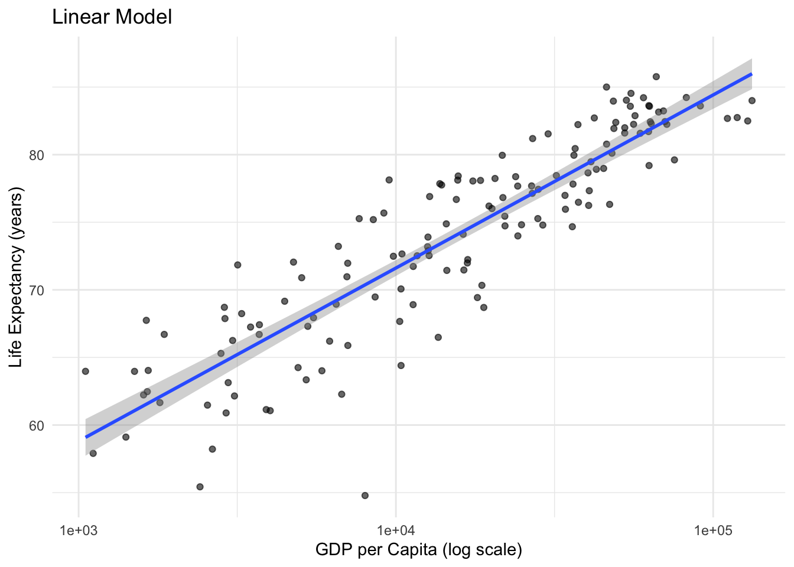
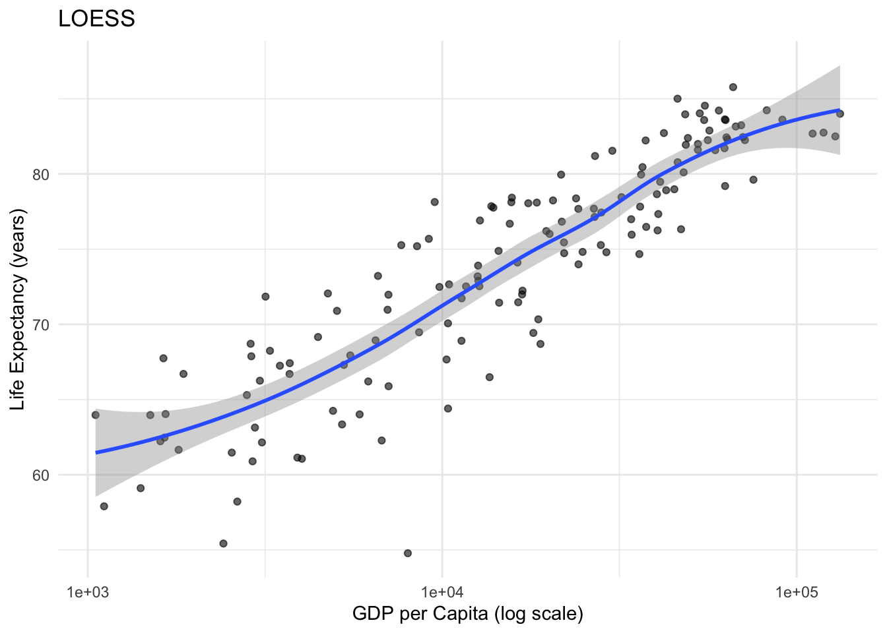
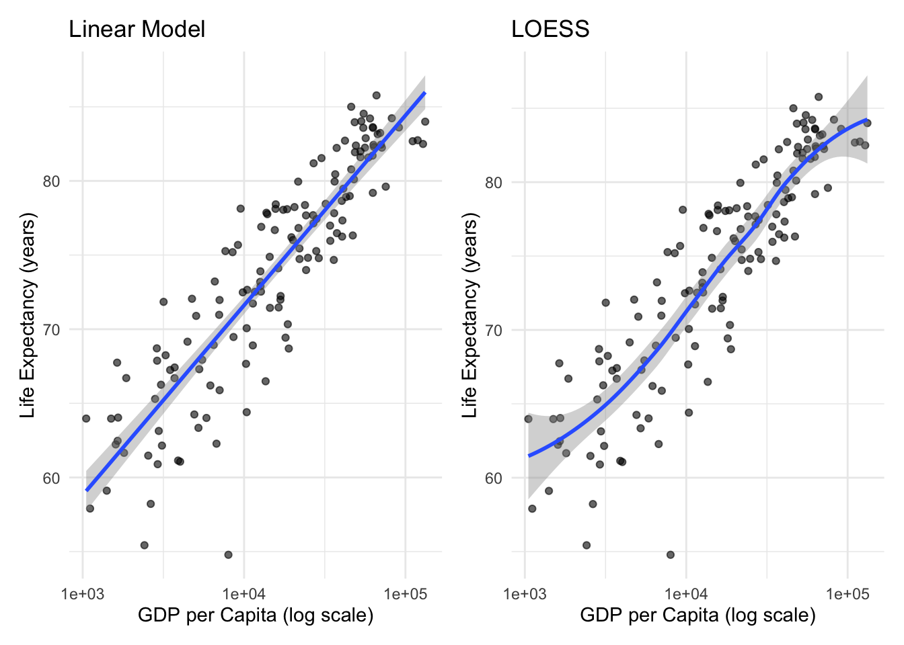
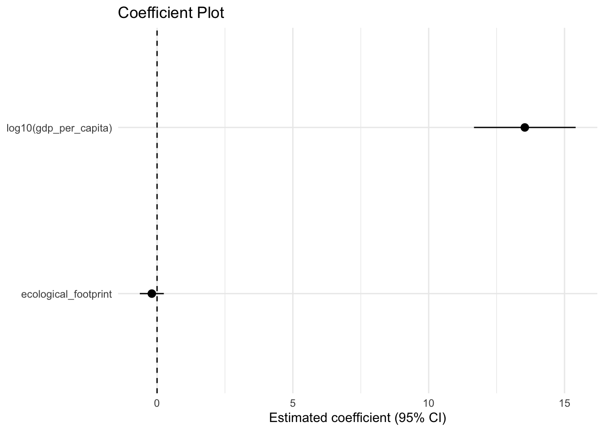
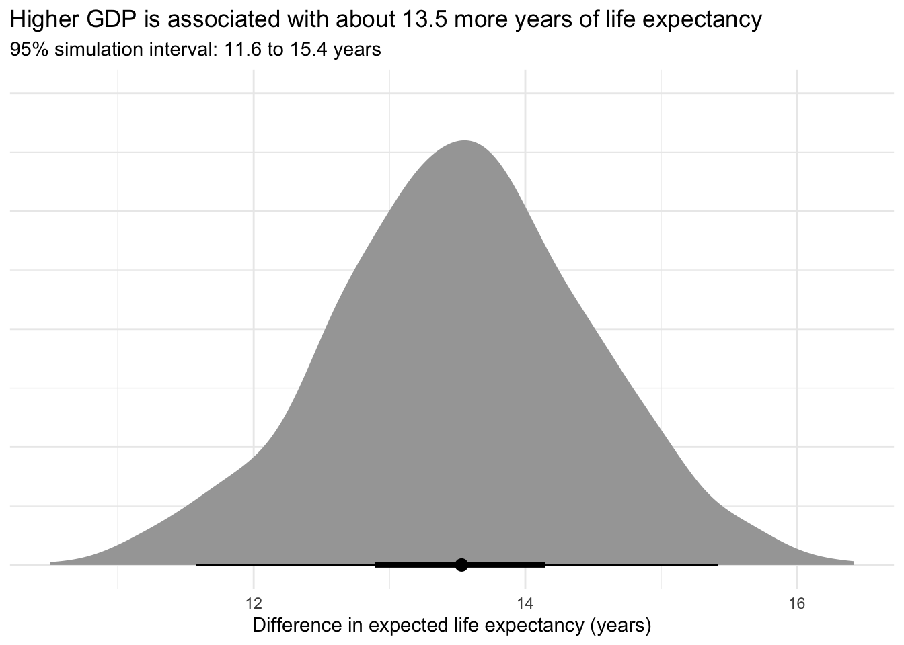

library(tidyverse)
library(readxl)
library(janitor)
library(broom)
library(MASS)
library(ggdist)
library(patchwork)
# Read the country-level HPI data
hpi_raw <- read_excel(
"HPI.xlsx",
sheet = "1. All countries",
skip = 8
) |>
clean_names()EPPS 6356 — Prepare for Class 10
Practice: Relationships, Models, and Uncertainty
This practice uses the Happy Planet Index data to examine the relationship between GDP per capita and life expectancy, visualize regression coefficients, and display uncertainty using simulation.
Practice 1. Life Expectancy and GDP per Capita
The first exercise compares a linear model with a LOESS smoother for the relationship between GDP per capita and life expectancy.
hpi_practice <- hpi_raw |>
transmute(
country = country,
gdp_per_capita = as.numeric(gdp_per_capita),
life_expectancy = as.numeric(life_expectancy)
) |>
filter(
!is.na(gdp_per_capita),
gdp_per_capita > 0,
!is.na(life_expectancy)
)Linear Model
p_lm <- ggplot(
hpi_practice,
aes(x = gdp_per_capita, y = life_expectancy)
) +
geom_point(alpha = 0.6) +
geom_smooth(method = "lm", se = TRUE) +
scale_x_log10() +
labs(
title = "Linear Model",
x = "GDP per Capita (log scale)",
y = "Life Expectancy (years)"
) +
theme_minimal()
p_lm
LOESS
p_loess <- ggplot(
hpi_practice,
aes(x = gdp_per_capita, y = life_expectancy)
) +
geom_point(alpha = 0.6) +
geom_smooth(method = "loess", se = TRUE) +
scale_x_log10() +
labs(
title = "LOESS",
x = "GDP per Capita (log scale)",
y = "Life Expectancy (years)"
) +
theme_minimal()
p_loess
Comparison
p_lm + p_loess
Short answer:
LOESS fits slightly better because the relationship between GDP per capita and life expectancy is not perfectly linear, especially at lower GDP levels. Both models show a strong positive relationship, but LOESS captures the curvature more clearly.
Practice 2. Regression and Coefficient Plot
The class handout specifies carbon footprint as the second predictor. The current HPI workbook contains an ecological footprint measure, so ecological footprint is used here as the available environmental measure.
hpi_model <- hpi_raw |>
transmute(
country = country,
gdp_per_capita = as.numeric(gdp_per_capita),
life_expectancy = as.numeric(life_expectancy),
ecological_footprint = as.numeric(ecological_footprint)
) |>
filter(
!is.na(gdp_per_capita),
gdp_per_capita > 0,
!is.na(life_expectancy),
!is.na(ecological_footprint)
)m <- lm(
life_expectancy ~ log10(gdp_per_capita) + ecological_footprint,
data = hpi_model
)
summary(m)
Call:
lm(formula = life_expectancy ~ log10(gdp_per_capita) + ecological_footprint,
data = hpi_model)
Residuals:
Min 1Q Median 3Q Max
-15.7468 -2.0362 0.4428 2.1514 6.6964
Coefficients:
Estimate Std. Error t value Pr(>|t|)
(Intercept) 17.8371 3.4191 5.217 6.47e-07 ***
log10(gdp_per_capita) 13.5382 0.9465 14.303 < 2e-16 ***
ecological_footprint -0.1928 0.2237 -0.862 0.39
---
Signif. codes: 0 '***' 0.001 '**' 0.01 '*' 0.05 '.' 0.1 ' ' 1
Residual standard error: 3.323 on 139 degrees of freedom
Multiple R-squared: 0.8043, Adjusted R-squared: 0.8015
F-statistic: 285.6 on 2 and 139 DF, p-value: < 2.2e-16Coefficient Plot
coef_df <- tidy(m, conf.int = TRUE)
ggplot(
coef_df |> filter(term != "(Intercept)"),
aes(
x = estimate,
y = term,
xmin = conf.low,
xmax = conf.high
)
) +
geom_pointrange() +
geom_vline(
xintercept = 0,
linetype = "dashed"
) +
labs(
title = "Coefficient Plot",
x = "Estimated coefficient (95% CI)",
y = NULL
) +
theme_minimal()
Short interpretation:
GDP per capita has a strong positive association with life expectancy. The ecological footprint coefficient is much smaller and its confidence interval includes zero, indicating substantially greater uncertainty about its association in this model.
Practice 3. Simulation of the First Difference
The next exercise simulates 1,000 sets of regression coefficients and calculates the expected difference in life expectancy when GDP per capita increases from $5,000 to $50,000.
set.seed(123)
sim_betas <- mvrnorm(
n = 1000,
mu = coef(m),
Sigma = vcov(m)
)
gdp_low <- 5000
gdp_high <- 50000
mean_footprint <- mean(
hpi_model$ecological_footprint,
na.rm = TRUE
)
pred_low <- sim_betas[, 1] +
sim_betas[, 2] * log10(gdp_low) +
sim_betas[, 3] * mean_footprint
pred_high <- sim_betas[, 1] +
sim_betas[, 2] * log10(gdp_high) +
sim_betas[, 3] * mean_footprint
first_diff <- pred_high - pred_low
summary(first_diff) Min. 1st Qu. Median Mean 3rd Qu. Max.
10.50 12.89 13.53 13.52 14.15 16.42 quantile(
first_diff,
probs = c(.025, .5, .975)
) 2.5% 50% 97.5%
11.57367 13.53109 15.41978 Short interpretation:
Increasing GDP per capita from $5,000 to $50,000 is associated with an estimated increase of about 13–14 years in expected life expectancy. The simulation also shows the uncertainty surrounding that estimate rather than reporting only a single predicted difference.
Practice 4. Visualizing Uncertainty
The simulated first differences are displayed with a half-eye plot. This shows both the distribution of plausible estimates and the central uncertainty intervals.
fd_df <- tibble(
first_diff = first_diff
)
median_fd <- median(first_diff)
ci_fd <- quantile(first_diff, c(.025, .975))
ggplot(
fd_df,
aes(x = first_diff, y = 0)
) +
stat_halfeye(
.width = c(.50, .95),
point_interval = median_qi
) +
labs(
title = paste0(
"Higher GDP is associated with about ",
round(median_fd, 1),
" more years of life expectancy"
),
subtitle = paste0(
"95% simulation interval: ",
round(ci_fd[1], 1),
" to ",
round(ci_fd[2], 1),
" years"
),
x = "Difference in expected life expectancy (years)",
y = NULL
) +
theme_minimal() +
theme(
axis.text.y = element_blank(),
axis.ticks.y = element_blank()
)
Practice Takeaways
- GDP per capita and life expectancy have a strong positive relationship.
- LOESS suggests that the relationship is somewhat nonlinear.
- A coefficient plot makes the size and uncertainty of regression estimates easier to compare than a regression table alone.
- Simulation allows us to translate regression coefficients into a substantively meaningful quantity of interest.
- The half-eye plot communicates both the estimated effect and its uncertainty.
AI Use Disclosure
Generative AI was used to assist with R coding, troubleshooting, and interpretation of the practice exercises. I reviewed the code, checked the outputs, and made the final decisions about the analysis and presentation.